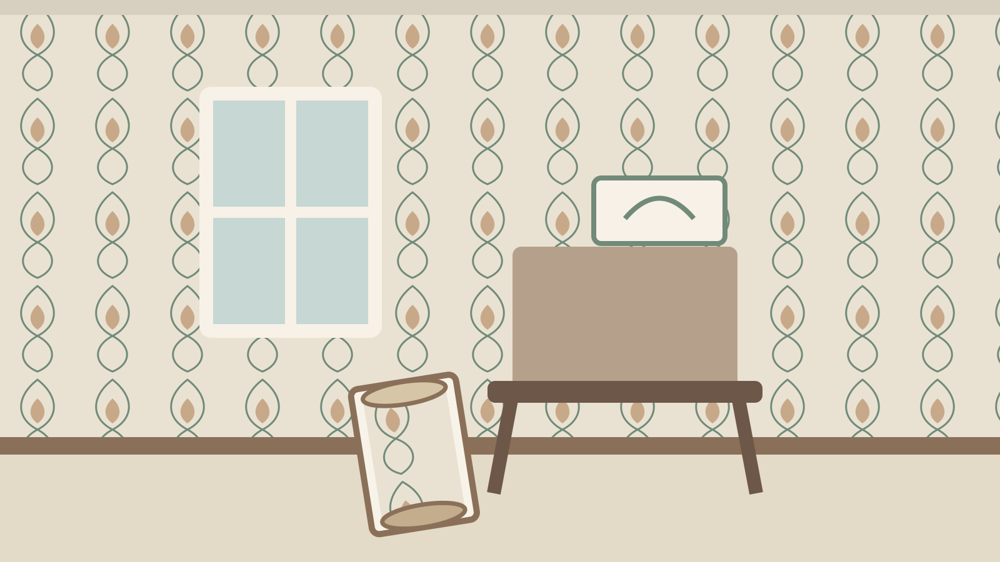
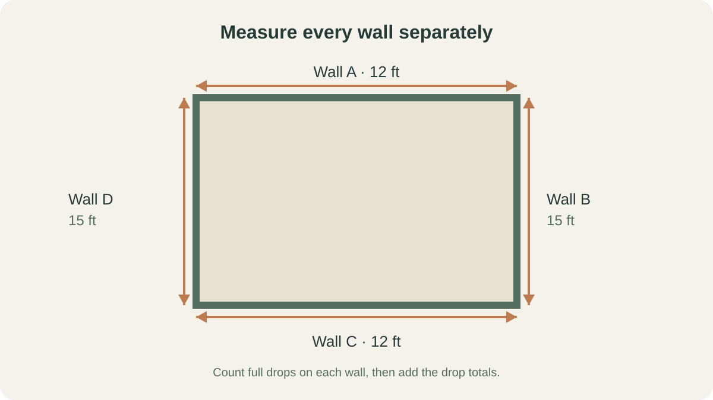
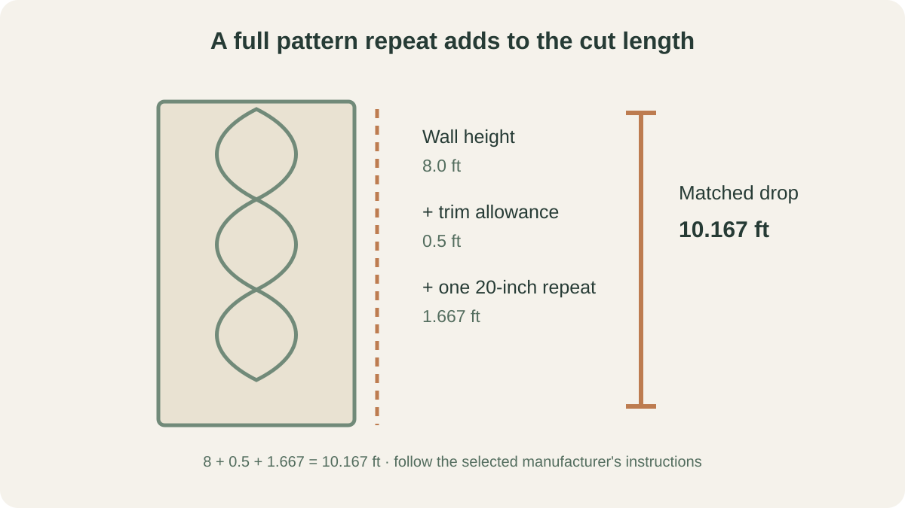
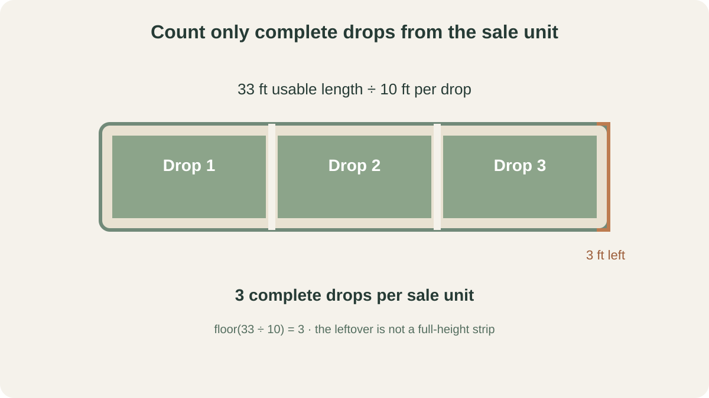

HOME DESIGN · WALLPAPER PLANNING
How to Calculate Wallpaper Rolls: Pattern Repeat, Drops and Waste
The safest way to estimate wallpaper is to count full-height strips for each wall, then work out how many matched strips fit on one sale unit. Roll width, wall height, trimming and pattern repeat all matter; floor area alone can hide the waste.

The reliable method: count drops, not square feet
Wallpaper is hung in vertical drops, not as one continuous sheet of floor-area coverage. A roll can cover plenty of square feet on paper and still yield fewer usable drops when the design has a large repeat. Sherwin-Williams publishes a usable-yield method that accounts for pattern repeat; manufacturers such as James Dunlop explain the drop-by-drop calculation. The exact product label and maker's calculator take priority over a generic rule.
- Measure each wall that will be covered.
- Divide each wall width by the usable wallpaper width and round up to whole drops.
- Calculate one cut length using wall height, trimming allowance and the pattern repeat.
- Divide the usable length in the sale unit by that cut length and round down to full drops.
- Divide the total drops needed by drops per sale unit and round up to whole sale units.
This method is for standard vertical rolls. Murals sold as numbered panels, borders, wide-width wallcoverings, and products with unusual match instructions need their own product-specific method.
Measure each wall, not just the room's floor perimeter
Measure from corner to corner along every wall you intend to cover, and measure the height at more than one point if the floor or ceiling is uneven. Use the largest practical height for the cut length, then follow the manufacturer's trimming instructions. Add the wall widths only after you have counted the drops for each wall: rounding each wall separately avoids assuming that an offcut from one wall will automatically match the next.

Use one unit system throughout. For a US project, keep feet and inches consistent; for a metric product, use metres or millimetres consistently. Do not assume every country or brand uses the same roll width or length. Read those dimensions from the exact product listing or label.
For a project with several rooms, repeat the measurements for each room using its own wall heights and widths. Keep the same wallpaper product and sale-unit details for the rooms you are estimating together. Do not assume a leftover length from one room will match a drop in another room unless the cutting layout has been checked.
Turn the pattern repeat into a full drop length
First add the trimming allowance required by the product instructions. For a straight-match pattern, this guide uses a conservative strip estimate that adds one full vertical repeat after trimming:
Matched drop length = wall height + trim allowance + one pattern repeat.
This one-repeat allowance follows the drop-length example published by James Dunlop Textiles and is also described in Graham & Brown's US wallpaper guide. It is a conservative estimating method, not a universal replacement for the selected manufacturer's instructions: product-specific calculators and yield charts take precedence. Do not combine different estimating methods or add another generic waste percentage unless the maker recommends it. For a free or random match, the cut length is usually the wall height plus the trimming allowance. A half-drop or other offset match shifts the design between strips and can create additional layout constraints; use the maker's instructions or calculator rather than forcing it into this straight-match shortcut.

Use the exact repeat printed on the selected product. If the label gives a 20-inch repeat, use 20 inches; if it gives 64 cm, keep the calculation metric. If the manufacturer's calculator specifies a different yield method, follow it rather than combining formulas. If the repeat or match type is missing, ask the supplier before ordering.
Count complete drops from the roll length
Once the drop length is known, divide the usable paper length in the actual sale unit by that drop length. Round down: a partial strip is not another full-height drop. Check whether the product is sold as a single roll, double roll, triple roll, package or panel set. Use the total usable length in the package you pay for, not a guessed standard size.

Drops per sale unit = floor(usable roll length ÷ matched drop length). If the result is zero, that product length cannot make even one full drop at your wall height. Choose a longer product or ask the supplier about an appropriate alternative.
Worked example: a room with a repeating pattern
This is an illustrative calculation, not a standard roll-size claim. Assume a room has two 12-foot walls and two 15-foot walls, an 8-foot wall height, and a wallpaper sale unit whose label states 20.5-inch usable width and 33 feet of usable length. Assume a straight-match repeat of 20 inches and a 6-inch trimming allowance. The product label and its actual packaging must be checked before buying.
- 12-foot walls: 12 ÷ 1.708 feet = 7.03, so 8 drops per wall; two walls need 16.
- 15-foot walls: 15 ÷ 1.708 feet = 8.78, so 9 drops per wall; two walls need 18.
- Total drops: 16 + 18 = 34 full-height drops.
- Matched drop length: 8.5 feet including trim + 1.667 feet for one 20-inch repeat = about 10.167 feet.
- Drops per sale unit: 33 ÷ 10.167 = 3 complete drops, with about 2.5 feet left over.
- Sale units required: 34 ÷ 3 = 11.34, rounded up to 12 sale units.
The example deliberately counts all four wall widths and does not subtract ordinary door or window areas. A real installer may make a more efficient cutting plan, but do not reduce the order on that assumption unless the layout has been checked. If the product is sold in double or triple packages, confirm whether the stated 33 feet applies to one package and price the same unit you counted.
What to do with doors, windows, corners and tricky layouts
A common shortcut is to subtract the full area of every door and window from the wall area. That can understate the number of drops: paper is still needed above and below many openings, and narrow offcuts may not be long or correctly matched enough to use elsewhere. Graham & Brown recommends measuring the full wall rather than deducting openings as a way to retain a practical allowance. Sherwin-Williams uses a different area-and-yield example with standard opening assumptions. These are different estimating approaches, not one universal rule.
For a conservative first estimate, count full wall widths. Only remove a full drop where a full-height opening genuinely eliminates it and the installer confirms the layout. Inside and outside corners also need care: walls are rarely perfectly square, and a strip should not be forced around a corner just to save paper. Follow the manufacturer's hanging instructions for the first strip and corner turns.
If a wall has a sloped ceiling, alcove, chimney breast, multiple windows, or a half-drop pattern, draw a simple wall-by-wall cutting plan before ordering. For murals or numbered panels, use the supplied panel sequence rather than the roll formula.
Check match type, roll label and batch code before paying
Look for three things on the product page or label: roll width and usable length; vertical pattern repeat; and match type (free/random, straight or offset/half-drop). The Wallcoverings Association explains how these match types differ. The product maker's own calculator may incorporate details that a general formula cannot infer from the room dimensions alone.
Also check the run, batch or dye-lot code. Sherwin-Williams advises checking that the codes match because wallpaper from different production runs can vary in colour. Keep the label and a small offcut after installation in case a future patch is needed. Ask the supplier whether a spare is sensible for that particular design; do not automatically add one full roll to every order.
Common mistakes that lead to a short order
- Using room floor area as the only input and ignoring each wall's width.
- Dividing by roll area without allowing for the number of complete full-height drops.
- Forgetting to round the cut length up to a full pattern repeat.
- Rounding drops per roll up instead of down.
- Subtracting every window and door as if its offcut were reusable.
- Confusing a single roll with a double-roll package or pricing a different sale unit from the one counted.
- Mixing batch codes or assuming a later purchase will match the original colour.
When to use the product calculator or ask an installer
Use the wallpaper manufacturer's calculator when it asks for the exact product, repeat and match type; it can apply product-specific yield rules. Ask a supplier or experienced installer to check the cutting plan for large repeats, half-drop patterns, high ceilings, stairwells, murals, expensive papers or irregular walls. The HomeProjectWise Home Project Calculator can help check simple room dimensions and area, but it does not yet calculate wallpaper drops or pattern waste. That distinction matters: an area result is not a wallpaper order.
For a broader decorating decision, see our guide to choosing a paint finish for each room. Browse the full guide library for other practical home-project advice. Bring the product label and your wall measurements when asking for a final quantity check.
Frequently asked questions
Should I calculate wallpaper by square feet or by strips?
For most patterned wallpaper, calculate full-height drops (strips) first. Roll width determines how many drops each wall needs, and wall height plus trimming and pattern repeat determines how long each drop must be. Area is a useful cross-check, but it can hide pattern-matching waste.
Do I subtract doors and windows from the wall area?
Do not automatically subtract their full area. You still need paper above and below many openings, and cut-offs may not fit elsewhere. Count full wall widths unless a full-height opening genuinely removes a complete drop and the layout has been checked.
How does pattern repeat change the number of rolls?
For a straight-match pattern, the cut length must be rounded up to a whole number of repeats after adding the trimming allowance. That can reduce the number of complete drops cut from each roll. Use the exact repeat printed on the product label.
Can I use leftover wallpaper on the next wall?
Sometimes, but do not assume it. Pattern alignment, the starting point, wall corners and the next drop's match position can make an offcut unusable. Count each wall separately unless the installer or supplier confirms a layout that reuses it.
Why should all rolls come from the same batch?
Wallpaper printed in different production runs can vary slightly in shade. Check the run, batch or dye-lot code and ask the supplier to provide matching rolls; keep a labelled spare if the manufacturer or installer recommends one.
Sources and method
- Sherwin-Williams: How to Estimate How Much Wallpaper You Need — US-oriented area/yield example, pattern-repeat yield bands, roll packaging and batch-code advice.
- Graham & Brown: How to Measure for Wallpaper — wall-by-wall measurement, full-wall approach around openings, match types and product calculator guidance.
- Graham & Brown US: How Much Wallpaper Do I Need? — explains the strip-count method and adds the pattern repeat to wall height when estimating drop length.
- James Dunlop Textiles: How to Calculate Wallpaper Requirements — drop count, trimming, repeat, usable drops per roll and waste guidance.
- Wallcoverings Association: Understanding Wallcoverings — random, straight and drop-match explanations.
- Sherwin-Williams: How to Hang Wallpaper — plumb starting line, strip width and installation technique.
Method note: the worked example is arithmetic using explicitly stated hypothetical product dimensions. It is not a price quote, a standard roll specification or a substitute for the selected manufacturer's calculator. This guide was prepared on 7 November 2026.